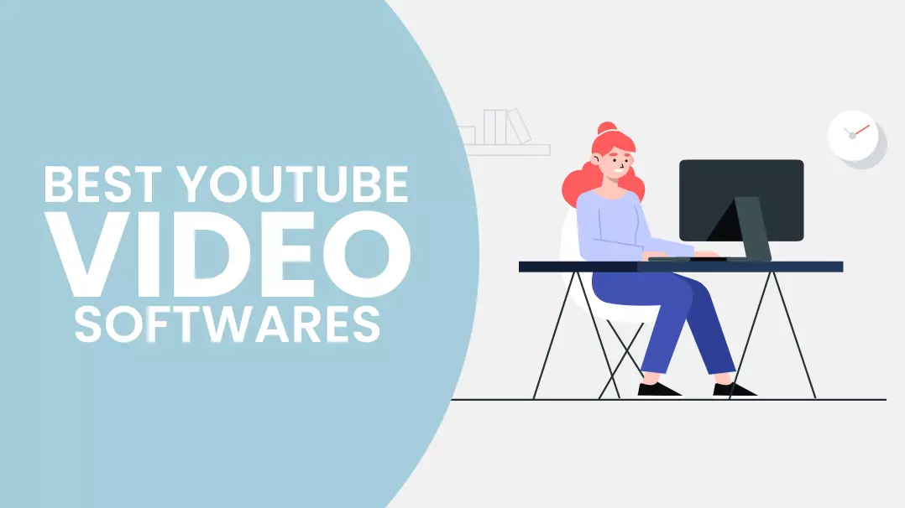
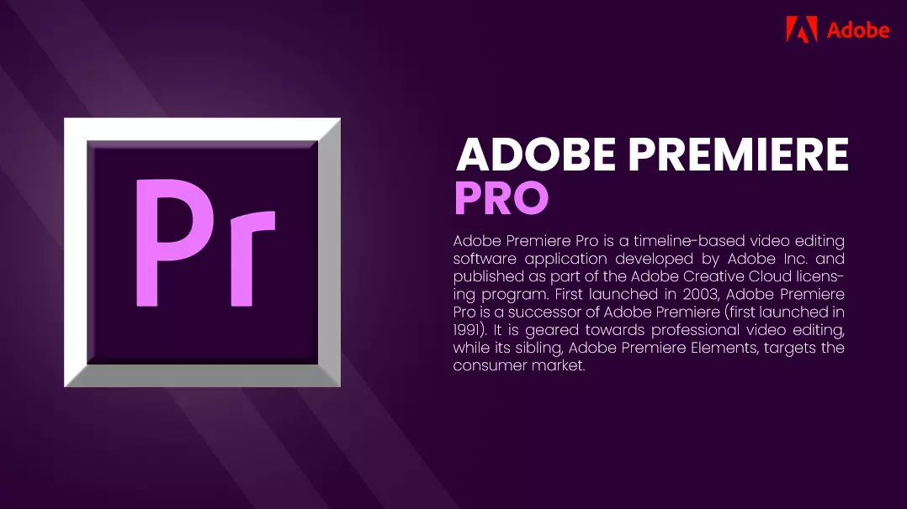
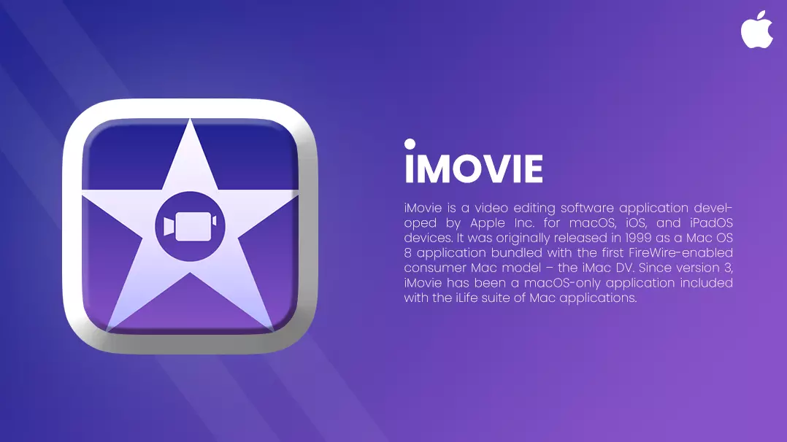
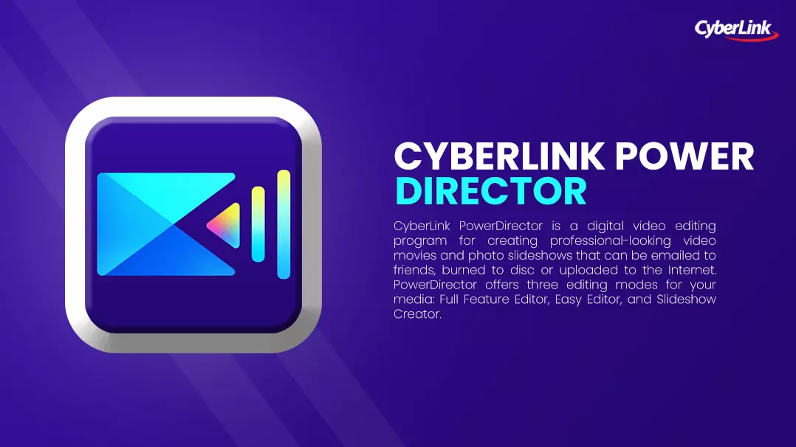
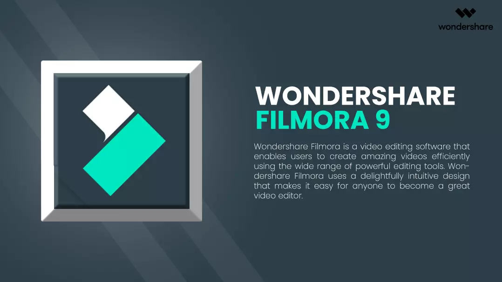
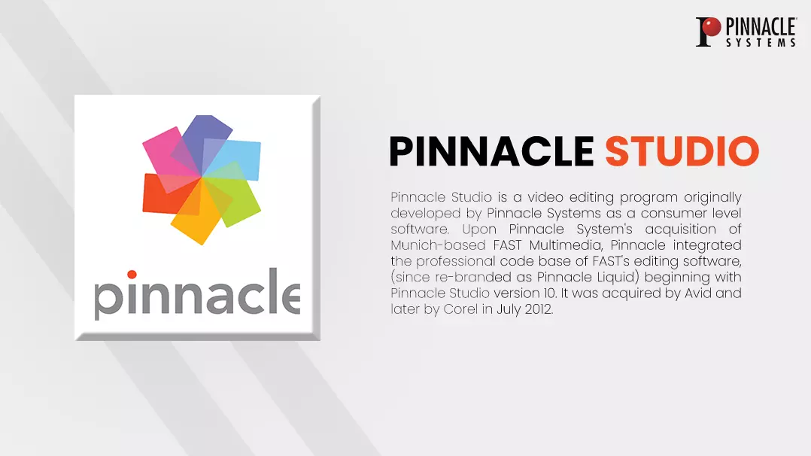
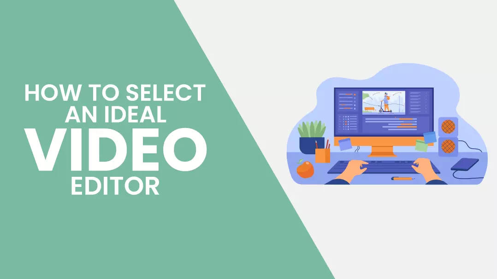
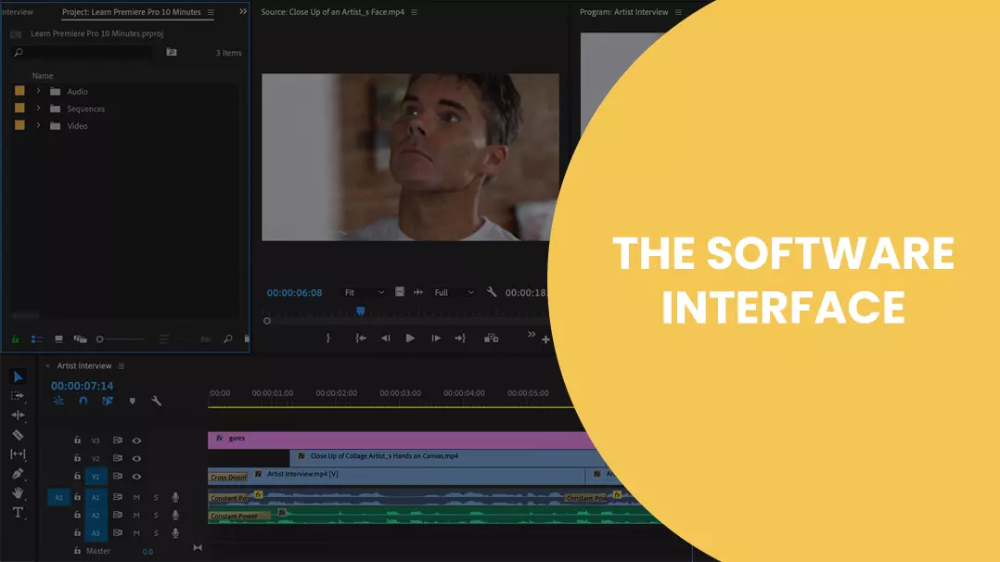
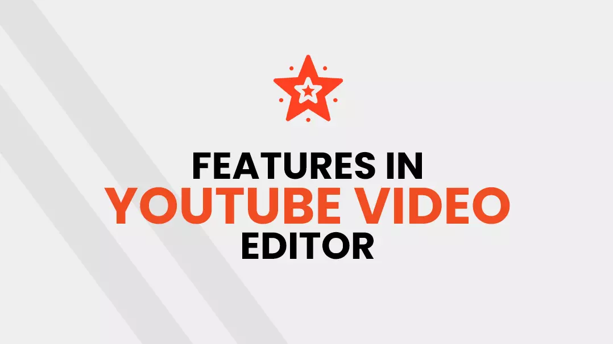
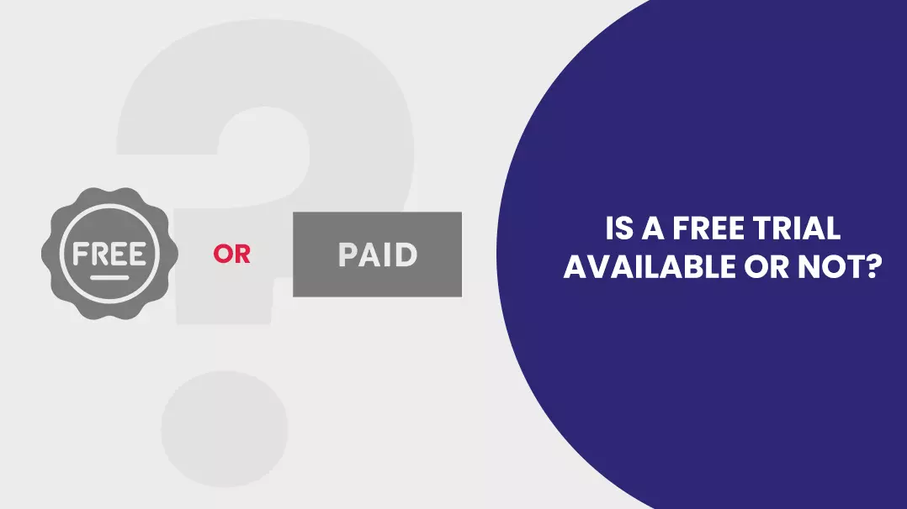

As a YouTuber, you cannot compromise on the quality factor of your videos. Video editing software available on the market can certainly help you reach the epitome of perfection and breathe life into your content. Why is editing your video important? - Well, if all your clips do not come together in harmony or you cannot relay the correct message from your footage, the end product will look shabby and will not appeal to your viewers. You, for sure, do not want to let your audience down and come across as an amateur who does not know what he is doing. Think of your original video as raw material that needs to undergo rounds of editing before it turns into something presentable to your target audience. It would help if you cleared out everything undesirable or unnecessary to give your viewer the best viewing experience. Now, narrowing down on editing software that best suits your needs can get a little tricky. You may be prompted to purchase the same video editing tool that other creators on YT are using. Or you may decide to select one that is easier to use and is pocket friendly. We understand, not everyone has the money to spend. If you are starting on your YouTube journeyand cannot afford to shell out cash, you can always take advantage of the best free YouTube video editors out there. YouTube is the second largest search engine on the planet and has a repository of unimaginable quantities of videos. Every day on average more than 720,000 hoursof video footage gets uploaded on the video-sharing platform And the number keeps growing every year. By creating quality content, you command trust from loyal followers. YouTubers also buy YouTube subscribers to increase viewership who their videos, or even buy YouTube likes to boost their organic engagement. This article will cover different facets that an ideal YT video editing software should possess - this will assist you in making calculated decisions. We have also listed down some good video editing software for YouTube as references. You don't have to buy the exact ones on the list, but you can use them to guide your future purchases.
Best YouTube Video Editing Software

-
Adobe Premiere Pro

The name Adobe attached to it says it all; the premiere Pro is a software that is not only used by YouTubers but has also gained prominence in Television and cinematic industries. You can gauge the popularity of this tool from the fact that Top YouTubers like PewDiePie, Jake Paul, and smoosh prefer using this YouTube video editing software. With Adobe premiere pro, you are set for life. You will never have to look for an alternative. This tool is loaded with features like 4K, 8K and even supports virtual reality. Adobe Premiere Pro is also able to integrate features from other Adobe products like After effects. You can also synchronize your video with audio. There are so many features jam-packed into Adobe Premiere Pro that it sometimes gets challenging to keep track of all of them. But Adobe provides a flexible user interface that you can tweak as per your preference. With a customizable dashboard, you can ensure that your favourite editing tools are always in front of your eyes. Cost: Starts from $20.99/month. Pros:
- An Interface that is user-friendly
- Export project in multiple formats
- Part of the adobe suite, easy integration with other products
Cons:
- Customizing title can be challenging.
- High cost for license
-
IMovie

Create amazing 4k videos out of this world, using the Apple iMovie software, which comes preloaded on Apple products like Mac iPad or iPhone. This free editing software for YouTube is a handy alternative for novice YouTubers lacking in editing experience. Users receive ten video filters and eight themes that come with titles, transitions and music. Users also gain access to multiple effects like slow motion, split-screen, the image inside another image and fast-forwarding. Video editing is not the only thing you can do with Apple iMovie; you can also produce soundtracks using inbuilt audio tools. One feature that sticks out from the rest is the 'green screen' that lets you insert your production in different locations. Cost: Good news, this software is free for use. Pros:
- User-friendly interface.
- Allows 4K video modification.
- Ten high-end video filters
- In-built option to share your creations with other Apple devices
- Loaded with features.
- Easy navigation.
Cons:
- Software is only available on iOS devices.
- Difficult to customize the user interface.
- Lack of options for 360-degree video editing and motion tracking.
Also read: How to grow YouTube channel fast
-
Cyber Link Power Director 365

The following YouTube video editing software on this list is CyberLink power director 365. This software comes with many inbuilt features like motion tracking, 360-degree editing and Multicam editing - all at reasonable pricing. If you are a creator with less editing experience, this software has got your back. A magic movie wizard built inside the easy editor lets you produce videos quickly by bringing together your video clips and images. On the other hand, if you plan to go all-in and test all the features this software has to offer, then you can use the tutorials available to guide you through the process. CyberLink PowerDirector 365 encompasses a wide array of features like colour correction, video mixing, multiple cam configuration and display capturing - so go nuts. Cost: The pricing for this software fluctuates between $70 and $100 per month. Pros:
- Faster rendering
- 360-degree editing
- Beginner-friendly
- Affordable
- Perfect for 4K and 3D video formats
Cons:
- Compatible only on window devices
- Colouring tools are inadequate
-
Filmora9

Mac users will be familiar with the word Wondershare. Wondershare filmora 9 is a good editing software for YouTube designed for YouTubers who are often reluctant to spend too much time understanding the functionalities of editing software. They would instead go straight to the creating and editing part of the video. Filmora 9 is user-friendly and comes with 4K resolution support; this software can be used by anyone - irrespective of skills and level of expertise. Equipped with both video and audio tools, with added transition, caption, filters and overlays, even a novice can create a work of art that looks great and sounds fantastic. Moreover, this software does not put much strain on your pockets and is an ideal alternative for video customization. You will not be able to get your hands on high-end features, but this software has everything you need to create quality content. You can import and edit 100 videos and 100 audio tracks, making Filmora 9 enough for any project. Cost: Multiple variants are available for the software; one is free, other is a one-time purchase for €59.99. Pros:
- Software is compatible with both Windows and Mac.
- More than 50 formats support.
- The interface is the use of friendly and responsive.
- 4K editing format
- Beginner-friendly
- Comes with in-built video processing software (green screen, DVD, 3D writes, image stabilization AVI, scene detection, audio mixer etc.)
- DVD burn option for your project.
Cons:
- Does not support images 360 degrees images.
- Object detection features not available.
- No option for surround sound.
- Features such as Multicam, storyboard editing, and closed subtitles are absent.
-
Pinnacle Studio 24

Up next, we have Pinnacle Studio 24. This YouTube video editing software is beginner-friendly and has been in the game for the past couple of years. This software may not provide a wide variety of features like other contenders in this list, but this is the best choice for complete beginners. The software has an interface designed for newcomers - one can easily navigate the dashboard with some practice. On the other hand, once you get the hang of this software, you can take it up a notch and try out the advanced features available for higher-level purchases. The features at your disposal include 360 VR editing, dynamic video masking, keyframing controls etc. If you do not have any prior editing knowledge, have not put money in Adobe or Apple products and have tight restraints on your wallet, then you should consider Pinnacle Studio. Cost: Starts at 67 USD Pros:
- Pocket friendly
- Easy to use
Cons:
- No free trials
- More features at more price
- Compatible only on Windows
Also Read: Create YouTube Shorts
How to Select an Ideal YouTube Video Editor

Looking at videos on YT with tons of animation, transition and creativity would leave anyone speechless and in awe. I suppose you want to achieve the same level of quality in your videos? But are having a hard time deciding on a tool that best suits your needs. Well, your confusion ends here. We have listed some points that you should consider before narrowing down on your ideal YouTube video editor.
-
The Software Interface

The interface is the first challenge you need to overcome before trying out any new YT video editing software. The learning curve is steep, and you need to spend considerable time getting comfortable using the various features built within the tool. Even a seasoned user with experience in using similar software can face difficulties at the start. Your favourite tool could be missing or located elsewhere. Also, the shortcut keys or hotkeys that you are used to may not work. Therefore, it is vital to research a video editor before you go ahead with your purchase. Watch review videos, tutorials on YouTube and other sources to determine if the software is the one for your needs.
-
Features In YouTube Video Editor

All YouTube video editing software comes laden with a wide variety of features. While some parts are common for all, others are unique to a particular editing tool. You could always ignore features that you seldom use, but the device you select must have everything you need for your video editing needs. Here are some features that are handy to consider in your arsenal:
- Transition: You should pause when shifting between scenes; this makes for a better user experience when viewing your video. Usually, at the end of one sequence, there is a black screen before the following sequence commences; when this happens, you could consider using transitions depending on the types of videos you produce.
- Effects and filters: YouTubers use countless effects in their videos; some are easily identifiable, whereas others are not visible to the naked eye. These effects are the result of editing software. Hence you have to make sure that the one you choose has many effects and filters at your disposal. Auto exposure filter, chroma-key, De-noise colour correction filter, distortion effects, audio filters, blur effect are some standard features your YouTube video editor should process.
- Editing tracks: this points to the number of track modifications your video editor supports at the same time. Today, paid as well as free software provide multiple track support.
-
Is A Free Trial Available or Not?

The software that you select must have an option of a free trial. We say this because there is no limitation to the number of good editing software for YouTube, but what looks good on paper can give you a poor user experience when you start using the software. A free trial gives you hands-on experience on how the underlying editing tool works. You can determine if the software has features that you need for your YT video edits - this can help make your final purchase decision much more straightforward.
To Sum Up
The best video editing software for YouTube is one that gives you desired results with your video projects. When you meet all your content goals with your selected tool, then free video editing software is the same as a paid one. No matter your needs, you have to get an editing tool that you are comfortable using. We hope our article helped you in selecting an ideal YouTube video editing software. Which is your favourite tool? Let us know. Feel free to share